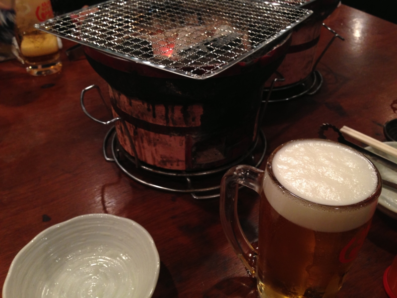
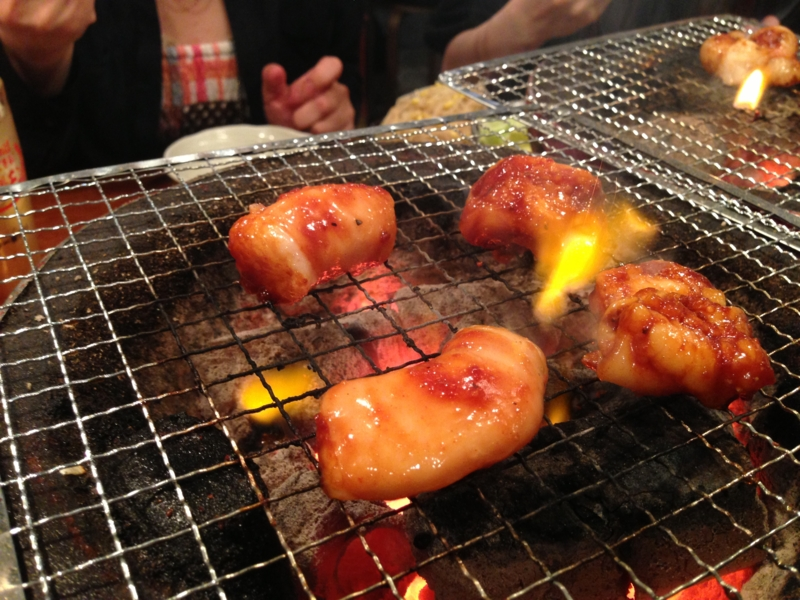
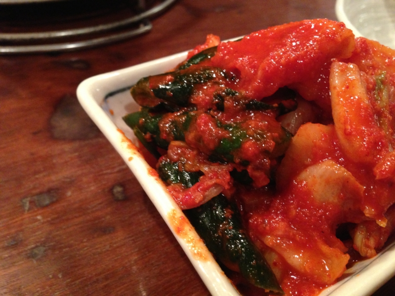
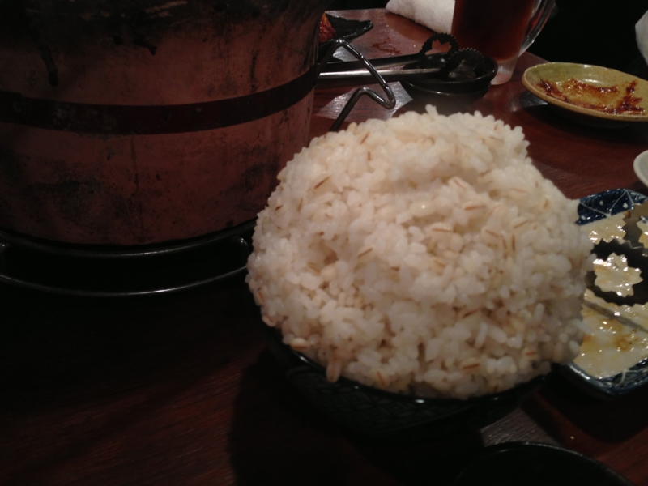

亀戸でホルモン食った
公開日：

@shibayan が福岡へ行くというので、辛子高菜をおみやげに頼んだら、ちゃんと買ってきてくれたらしい。辛子高菜は結構好き。チャーハンにしてもいいし、スパゲッティに入れてもいい。もちろん、とんこつラーメンにはバッチリ。お土産の受け渡しがてら飯でも食うかということになり、木曜日に亀戸までホルモンを食べに行った。

今回行ったのは「亀戸ホルモン」。
結構な人気店のようで、1時間ぐらい待った。ほんとは店に入るのに待つのは大嫌いなのだけど、まぁ、たまにはいいかな、と。並ぶだけあって、まぁまぁ美味しかった。ビールさえ飲まなかったら結構安く上がると思う。自分には無理だけど。

どうしてもお肉で口が油っぽくなるので、さっぱりしたキムチが美味しい。麦飯の大盛りは、だいぶ日本昔話盛りだった。
ちなみに、辛子高菜は受け取れなかった。@shibayan が家に忘れたらしい。なので、ただホルモンを食いに行っただけになってしまった。